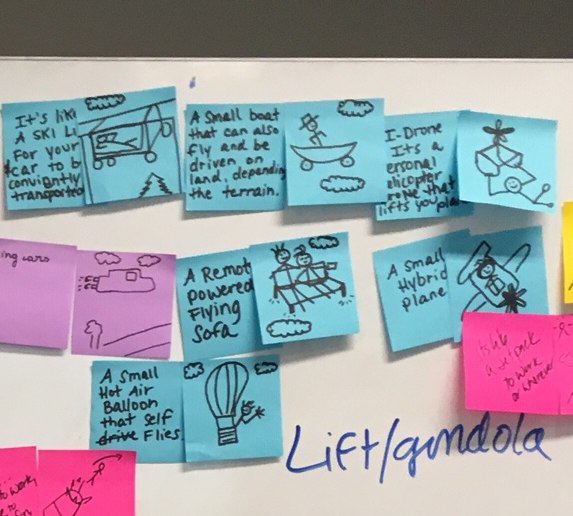

Resume
Education
Austin Community College
AAS User Experience Design
Certificate in Visual Communication User Experience Design
Started Fall 2017
On Track to Graduate Spring 2021
Art Institute International of Minneapolis
BAS Animation
Started 2005
Ended 2006
- 2-D Animation
- 3-D Modeling
- Animation History
- Color Theory
- Illustration
- Storyboarding
Kellogg Community College
General Studies in Art
Started 2003
Transfered 2005
High School
I graduarted from High School in 2004.
I graduated with Completion Certification in Law Enforcement from Calhoun Area Techology Center.
Experience
Leadership
- 6 years of experience as a Shift Supervisor.
- I managed a team of 6 to 15 people at a time.
- I juggled multiple roles from dishes to waitstaff as needed to maintain the expected level of service from customers.
- I successful trained multiple new employees in multiple positions.
- 3 months of experience as a team lead in Sterile Processing
- I oversaw up to 8 people at a time.
- I kept in communication with Surgery Nurses to ensure they had what they needed or help get them what they needed when they needed it.
- The trickest part was mantaining time managment at a pace of two hours ahead of schedule to make sure that everything got done on time.
Relevent Work History
- UXUI Teaching Assistant | May 2022
- Assist students with troubleshooting assignments
- Teach students to how to look for solutions to problem areas
- Set up meetings and set times to meet with students outside of tutoring hours
- Tackle side projects for professors as needed
- User Experience Consultant
- Austin Public Library | Jan 2021 - May 2021
- Worked with APL's creative team to reconstruct their Information Architecture
- Wrote script and recruited users remotely
- Conducted over 20 user interviews, usablity testing in UserZoomGo, card sort and tree tests in optimal Workshop from customers and employees
- collaborated with team remotely in Miro
- presented findings, insights and suggestions to 50+ shareholders remotely
- Case Study avilable to view in Portfolio page
Software
- Adobe Suite:
- Illustrator
- Photoshop
- Acrobat
- XD
- Figma
- Sketch
- InVision
- Google Suite
- Microsoft Suite
- User ZoomGO
- Miro
- Optimal Workshop
Group Roles
I've had a lot of experience working as a group for assigned projects. It's hard work and takes a lot of coordination on everyone's part. I've learned how to listen to others more effectively and when to speak up. I feel confident and comfortable to share my ideas as well even if I think they might be silly. If there's one thing I've learned about this career field, it's silly ideas are often the best ideas to expand on.
I'm comfortable in a leadership role or supportive roles in a group. Everyone's role and tasks are vital to accomplising our shared goal. I'm comfortable working with any person as long as they are respectful.
Contest
Design Contest 1st Place winner in 2005
Skills
HTML and CSS
I am comfortable working with HTML and CSS to build web pages responsively from the ground up. I find it a lot of fun to expand my knowledge in this area and tinker with code.
I currently have no knowledge in Javascript. I'm always looking for new challenges and it's on my list of things to learn.
Communication
I am a big communicator in a team setting. This has to do with playing sports and working in restaurant where communication had to be instant or something could go wrong in a second. I'm used to communicating my needs and talking out ideas to ensure everyone is on the same page. I love working with people and I am easy to get along with.
- Miro
- Slack
- Zoom
- Google Meet
- Microsoft Teams
Punctuality
When I was in high school I had two great instructors who drilled home the phrase, "If you're not 15 minutes early, you're 15 minutes late". I now adhere to this in every aspect of my life. I show up early to meetings, to work, to appointments, everything.
Customer Service
I've worked in restaurant for 10 years and I've found I have a burning desire to help people in absolutely any way I can. I also discovered I have infinite amount of patience. I like to do what I can to help people get what they need and am always very interested in how people think.
Problem Solving
I love a challenge. I enjoy a lot of different types of puzzles. I enjoy working through the problem to unravel the solution or solutions. I have thoroughly enjoyed working through things and trying to find creative solutions. I use it in my home when it comes to tackling a project.